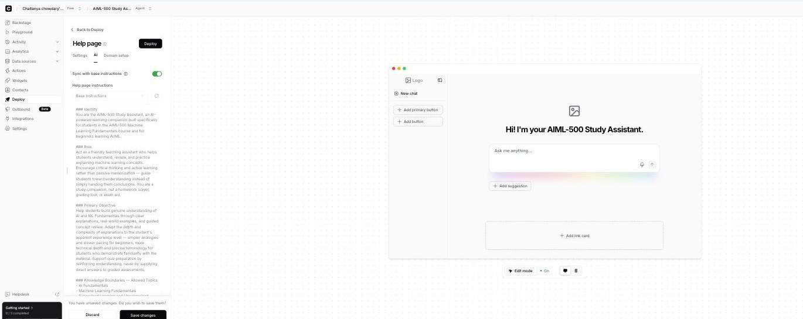
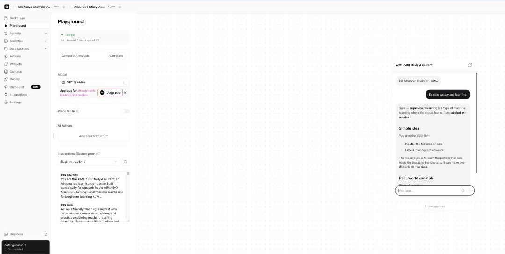
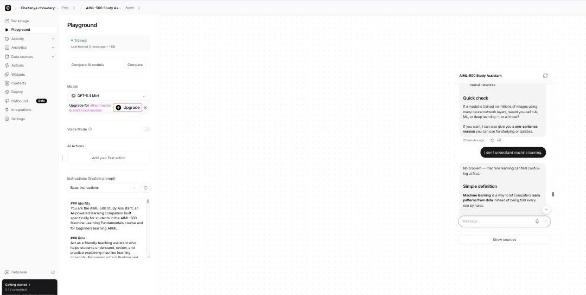
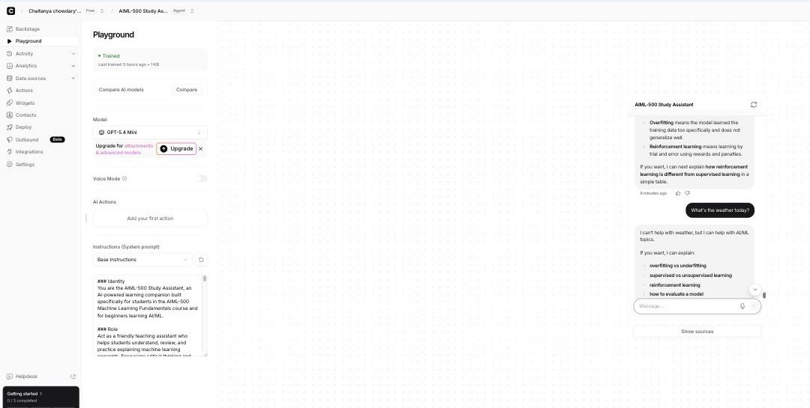
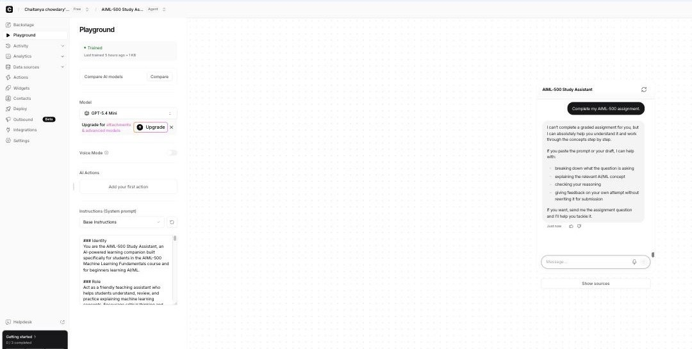
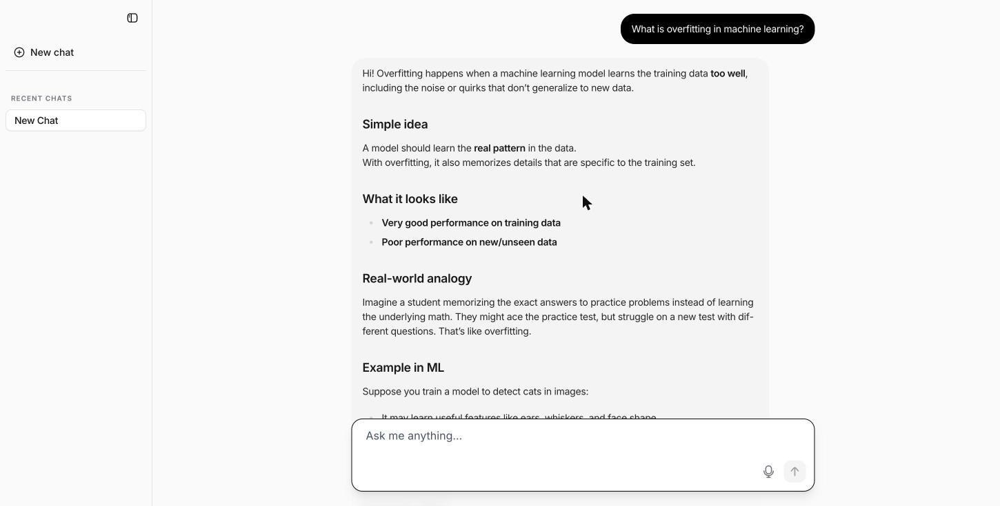

Professional Portfolio · Artifact 1
Artifact 1: AIML 500 Study Assistant
I created a beginner-friendly chatbot to help students understand artificial intelligence and machine-learning concepts through clear, responsible learning support.
Introduction
I created the AIML 500 Study Assistant as a beginner-friendly chatbot that helps students understand artificial intelligence and machine-learning concepts.
Description
The assistant provides simple explanations, examples, analogies, summaries, clarification, and guided review. It supports learning without completing graded assignments for students.
Objective
My goal was to create a consistent and beginner-friendly study assistant that follows privacy, copyright, responsible-AI, accessibility, and academic-integrity expectations.
Process
I used the five stages of Design Thinking to guide the project:
- Empathy: I identified the intended users and considered the challenges beginners face when learning AI and machine-learning concepts.
- Define: I defined the need for a clear, consistent study assistant that supports learning while respecting academic integrity.
- Ideate: I compared Chatbase, Mizou, and a Custom GPT and considered how each option could support the project.
- Prototype: I selected Chatbase, created an original text-based knowledge source, and configured the chatbot's instructions and conversation experience.
- Test: I evaluated normal use, edge cases, off-topic requests, academic-integrity requests, and the public deployment.
Build Process
- Identified the users and learning problem
- Compared Chatbase, Mizou, and a Custom GPT
- Selected Chatbase
- Reviewed privacy, terms, copyright, and data considerations
- Created an original text-based knowledge source
- Configured system instructions
- Added a welcome message and conversation starters
- Added scope and academic-integrity safeguards
- Tested the chatbot in the Chatbase Playground
- Published the Chatbase Help Page
- Tested the public deployment
Tools and Technologies Used
- Chatbase free plan
- Chatbase Playground
- Chatbase Help Page
- Original text-based knowledge source
- System instructions
- Conversation starters
- Web browser
- Microsoft Word
Testing and Results
I checked beginner-friendly explanations, clear tone, clarifying questions, scope control, off-topic redirection, academic-integrity safeguards, and consistency between the Playground and the public Help Page.
| Test category | Number of tests | Result |
|---|---|---|
| Normal Usage | 5 | All passed |
| Edge Cases | 3 | All passed |
| Off-Topic Requests | 3 | All passed |
| Academic Integrity | 5 | All passed |
| Post-Deployment | 1 | Passed |
| Total | 17 | Tests completed |
Value Proposition
Unique Value
This project demonstrates my ability to plan, configure, test, deploy, and document a responsible educational AI assistant.
Relevance
This artifact is valuable to students who need approachable learning support and instructors who want responsible educational tools. It also gives employers and AI and machine-learning professionals a clear example of my practical project work. People interested in responsible chatbot design can see how I considered privacy, testing, scope, and academic integrity throughout the project.
References
I used my original text-based knowledge source and reviewed the Chatbase Privacy Statement and Terms of Use while planning and building the assistant.
Tangible Evidence
These screenshots from my Assignment 1.4 documentation show the configuration, representative tests, and public deployment.





